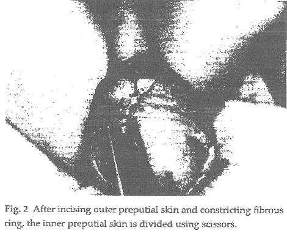
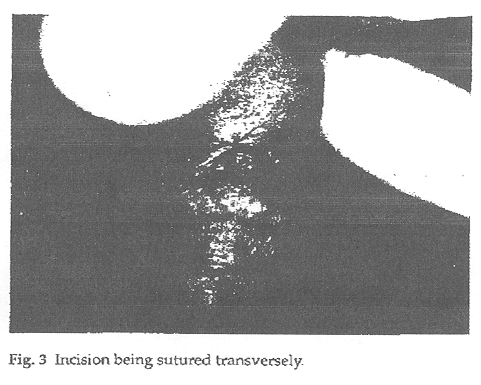
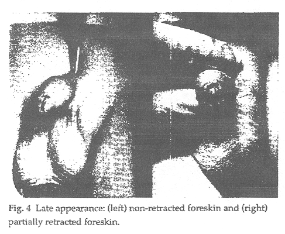

THE CIRCUMCISION REFERENCE LIBRARY
Non-retractile foreskin: a single
center
13-year experience
Amulya K. Saxena1, Klaus Schaarschmidt1, Alexander Reich2, Günter H. Willital1
1Pediatric Surgical
University Clinic, Münster, Germany
2Anesthesiology University Clinic,
Münster, Germany
Background: Non-retractile foreskin comprise a significant number of referrals by pediatricians and general practitioners to pediatric surgical centers. In attempts to find alternatives to widely practiced circumcision, various procedures have been developed over the years in order to relieve the non-fibrotic narrowing of the foreskin.
Patients and Methods: In a 13-year period from 1984-1997, we treated 2554 patients with non-retractile foreskin at our center. Dorsal relieving incision was the technique of choice and was performed in 2177 patients, circumcision in 73 patients and preputial adhesiolysis was sufficient to retract the foreskin in 284 patients.
Results: Satisfactory esthetic results, an extremely low rate of postoperative complications (1.8%) with a recurrence rate of only 0.8% (18 patients) was observed in our series with dorsal relieving incision.
Conclusions: Dorsal relieving incision operation was found to be less invasive, safe and effective procedure for non-retractile foreskin not affected by extensive secondary scarring. This technique has fewer complications in comparison to circumcision and can be performed as an ambulatory procedure.Keywords: Dorsal relieving incision - Circumcision - Preputial adhesions - Phimosis
[CIRP Note: The "dorsal relieving incision" procedure discussed in this article appears essentially to be similar to the "dorsal slit with tranverse closure" procedure that is discussed by other authors.]
Careful evaluation of patients referred to our center over the past 13 years with non-retractile foreskin show that physiological preputial adhesions are present in most boys between the ages of 1 and 2 years and persists in 1 in 30 males after the age of two years. Narrowing of the preputial opening accompanied with a circular non-fibrotic ring is observed in 1 in 200 boys making it impossible or painful to retract the foreskin, leading to emergencies such as balanitis. In the absence of an infectious narrow preputial opening, local non-steroidal anti-inflammatory ointments1 or corticosteroids application2 and human chorionic gonadatrophin (hCG) injection therapy3 have been shown to be effective. However, preputial fibrosis secondary to iatrogenic or forced retraction, paraphimosis, balanitis and failed conservative therapy attempts have all been indications for the preputial-sparring dorsal relieving incision.
Patients and Methods
In the 13 year period from 1984-1997, dorsal relieving operation procedures were performed on 2177 patients at the Pediatric Surgical University Clinic, Munster. Circumcision was performed on 71 patients on request of the parents, frequently for religious reasons and, in 2 cases, secondary to balanitis xerotica obliterans. In the case of 284 patients, a simple preputial adhesiolysis was sufficient to relieve the pathology and no further surgical intervention was undertaken as the foreskin could be retracted with ease. The age of presentation of patients at the time of surgical intervention ranged from 1 to 14 years with the mean age being 4.6 years. Nine patients presented with non-reducible paraphimosis and were operated as emergencies. At least one episode of balanitis was documented in 128 patients. The rest could either not retract their foreskins fully or partially. Sixty-seven boys were operated at the time of other operations (22 inguinal herniotomy, 12 orchiopexy, 10 umbilical hernia repair, 6 paracentesis, 5 adenectomy, 4 hemangioma-laser therapy, 3 esophagus dilatation, 3 central cathether implantation and 2 ventriculo-peritoneal shunt implantation).
Operative technique
Under general anesthesia, the foreskin is retracted carefully and held under mild tension (Fig. 1). A longitudinal incision (a few millimeters) is then made using a scalpel on the dorsal preputial skin at the maximum point of tension. After the outer preputial skin has been incised, a white circular and constricting fibrous ring can be visualized which is completely divided, again using a scapel. The inner preputial skin now visible is then divided using scissors (Fig. 2). Bleeding is controlled with microsurgical forceps using a minimum diathermy strength and contact time. The retractability of the foreskin is tested and all adhesions between the preputium and the glans are separated using a blunt mosquito clamp, the tip of which is slightly wet in physiological saline to prevent glans abrasions. Using a wet swab and a pair of forceps, smegma present between inner preputial skin and glans in the sulcus is removed. The frenulum is evaluated and if its point of attachment is close to the uretheral orifice, it is divided carefully (2-3 mm) using a fine needle diathermy close to the glans while being held under tension. The retractability of the foreskin is tested and the longitudinal incision is then closed transversely with 5/0 Vicryl (Vicryl Rapid®, Ethicon, Norderstedt, Germany) maintained under mild tension (Fig. 3) Finally, dextpanthenol ointment (Bepanthen Roche®, Hoffman-La Roche, Grenzach-Wyhlen, Germany) is applied directly on the glans before the foreskin is returned to its normal anatomical position. This ointment application prevents the formation of new adhesions, between the glans and the inner preputium, that may be produced by fibrin secretion resulting from micro-traumatic adhesiolysis caused by the mosquito clamp.



Results
Dorsal relieving incision is a simple and minimally invasive procedure for the surgical management of non-retractile foreskin. Postoperative pain was mild and the majority of patients did not require any strong analgesics. Acetominophen as adequate for the postoperative pain management. Since 1994, this operation has been prefromed as an ambulatory procedure with local anesthetic blocks (dorsal nerve) considerably relieving the early postoperative pain.4 There were no immediate post-operative complications, but minimal to mild edema was observed in 40 patients (1.8%) and two boys had mild bleeding. The follow-up period was 1-7 years (mean 4.2 years). Recurrence was seen in 18 patients (0.8%) and cosmetically unacceptable foreskin due to long incisions was documented in 6 patients (0.27%). There were no other complaints about the esthetic results of this procedure (Fig. 4).
In the 284 patients where it was possible to relieve the non-retractile foreskin by simple preputial adhesiolysis as well as those patients managed with dorsal relieving incision, we encouraged application of dexpanthenol ointment after a 10 min 'sitz' bath followed by regular retraction one daily for a ten day period to prevent the formation of adhesions. On the other hand, mild to severe edema in 28 patients (38.4%), mild bleeding in 5 patients (6.8%), administration of strong analgesics (Pethedine) in 5 patients (Pethedine) in 5 patients and longer hospital stay (2 days) in 14 patients (19.2%) in 14 patients (19.2%) were observed in our series with patients who had undergone circumcision. Two patients returned to the operation room for revision after bleeding.
Discussion
Over the years, surgeons have attempted to deal with the problem of non-retractile foreskin by devising a variety of prepuce-sparing operations with the intention of easy retraction using minimum surgical intervention. These procedures ranged from balloon dilation5 to simple dorsal slit,6 Z-plasty,7 multiple Y-V plasties8 and full dorsal slit. The dorsal relieving incision practised at our center is a simple procedure of minimal surgical intervention with satisfactory results and a lower rate of complication. A triple incision plasty described by Wahlin claimed to have better esthetic results than single incision plasty, but this procedure was associated with a higher rate of complication and the series reported was rather small.9 Furthermore, we would agree with Holmland that a limited dorsal incision is sufficient to divide the fibrous ring.10 Our experience also shows that excessive manipulation of the foreskin during surgery almost always leads to postoperative edema, and minimal or adequate dorsal incisions of 3-4 mm are generally sufficient to relieve the constriction and produce satisfactory esthetic results. All prepuce-sparing procedures employed to date are reported to be less traumatic when compared with circumcision. This was evident in our series, as we had fewer complications associated with dorsal relieving incision in comparison to circumcision (edema 1.8% versus 38.4 percent and bleeding 0.1% versus 6.8%).
Most of the boys were referred to our center by pediatricians and 59.5% were operated only after previous attempts to treat with non-steroidal ointments, hCG, or corticosteroid creams had failed. In 18.2% of patients, the type of cream used in the conservative treatment was not known. In the local population, since it is considered important to preserve the foreskin, this ambulatory procedure has gained acceptance by the referring pediatrician and the parents. All the parents were informed about the two procedures and social demand was the major consideration for them to opt for the dorsal incision procedure. Also, a high standard of hygiene in the local population and regular retraction of the foreskin during bathing is responsible for the reduced risk for both phimosis and balanitis after the prepuce sparing procedure.
After retrospective analysis of our 18 patients with recurrent non-retractile foreskin after dorsal relieving incision procedures, we conclude the main reasons for recurrence are (i) incomplete division of the fibrous ring; (ii) longer dorsal incision that leads to larger scar formation; (iii) disproportional incision of the inner or outer preputial layer; (iv) improper transverse suture adaptation; or (v) fibrinous adhesion due to (a) inadequate postoperative retraction and (b) no ointment application between glans and prepuce. Satisfactory esthetic results of dorsal relieving incision along with this procedure being performed as a day-case have rendered this technique widely acceptable by parents, pediatricians and, most of all, school-age children.
References
http://www.cirp.org/library/treatment/phimosis/saxena1/